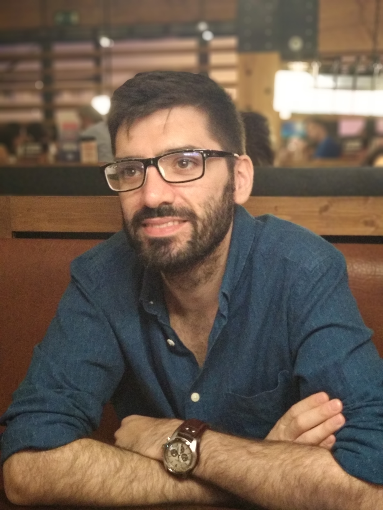

Making games is something personal, it's the perfect combination
of art and technology, it's a cultural product and it has to be done responsibly.
Making them while having fun is my passion.

Hello, I'm Nacho, a passionate technical game designer dedicated to infusing joy into people's lives through the magic of video games. My fascination with the human concept of "fun," its meaning, and its societal impact drives my continuous growth in game design and programming.
My journey began over twenty years ago when I won a Chinese NES clone in a raffle. Since then, I have never stopped thinking about video games. Unlike many gamedevs who start programming at a young age, my path was filled with challenges. Despite being told that game development wasn't a "real job," I persevered. After overcoming three college drop-outs and battling depression, I realized the importance of following my passion. I returned to university, even though I was considered "too old" to start again, and completed my studies in something that felt right—video games.
With a Bachelor's degree in video game development and a Master's in game design, my experience spans the indie scene, small studio projects, and AAA experiences. I'm proficient in Unreal Engine 4 & 5 and Unity/C#, with key strengths in teamwork, leadership, and project management.
Beyond the gaming world, I maintain an active lifestyle through sports and gym activities. I'm also initiating a podcast book club and have a deep love for board games. My lifelong passion for gaming has evolved from consoles to PC, with a particular interest in social play, action, strategy, RPGs, and indie games, especially roguelikes.
I'm eager to connect and explore the endless possibilities at the intersection of technology, creativity, and fun. Let's create something amazing together!